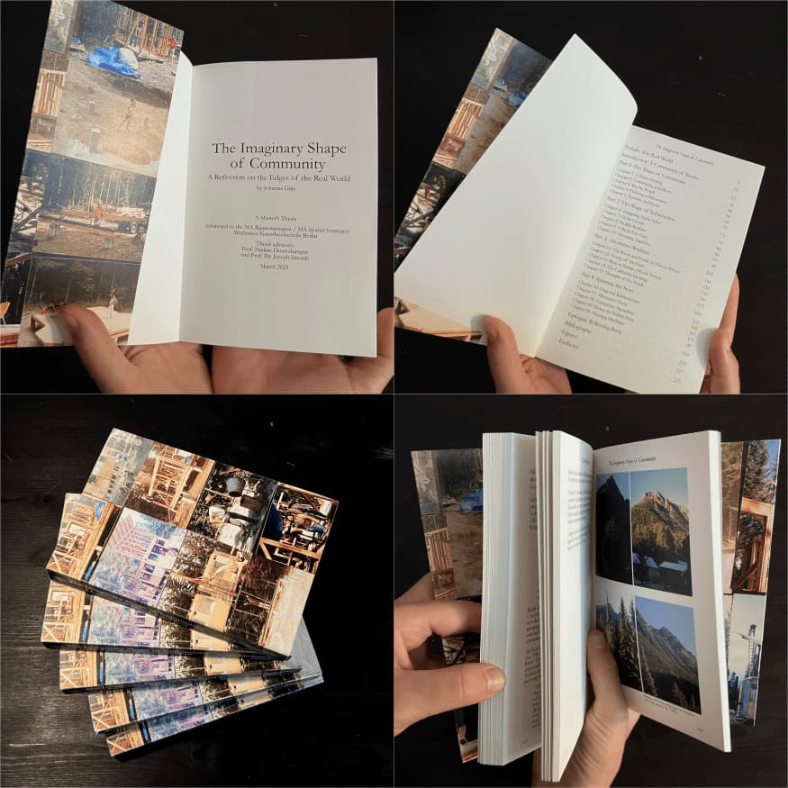

Writing
The Imaginary Shape of Community: A Reflection on the Edges of the Real World
This writing is about imagination and my experience of community, starting with my childhood in a remote village in the Cascade Mountains of Washington State. I go many places after that, exploring cults, communes, and psychedelic drug trips of the American hippie movement. Some ideas stretch back to utopian colonies in Europe and some later mutate into a Silicon Valley tech ethos. I search for the roots and fruits of flower power alongside early visions of computers, visions that change shape and morph into cloud technology. I write about the house my parents built for our family in northern Idaho and about the impulse to build new, alternative worlds. I examine crisscrossing coalitions that spun out of COVID and drink the Kool-Aid to go down rabbit holes, reflecting back on my time in tech. Behind my questioning of community as a political tool, I ask a question: "What is the real world?"
Here is an excerpt to get you oriented:
"…This story is in part autobiographical. It’s a story about dreams, ideas, and visions – my own and of those who have influenced me, directly and tangentially, up close, and across time and distance. This is a story about "my communities" (plural), the ways they have taken shape, and the ways they have shaped me.
Or, to look from another angle – to turn it upside down – this is also a story about the people I don’t want to be a part of my community. It’s about negative space. Which means it’s also about possible versions of myself I don’t want to be and hope never to become.
From this perspective, my thesis is a bit paranoid. Between the lines, I’m on the lookout for another version of myself that could be out there somewhere, lurking, mingling with the wrong crowd. This story is then also about another reality that threatens to cast shadows across the positive light in which I’d prefer to see myself, how I’d prefer to see the world.
Shadows can be sharp or make edges fuzzy. They change the shape of things.
From a bird’s eye view, my writing is about the use of "community" as a political tool. I believe in "community" as a tool to shape realities. I argue that the shape of this tool is morphing and that its mutations are dangerous. "Good" is not an intrinsic quality of community. The political power of "community" grows with the accelerating use of digital technologies to mediate public discourse. Increasingly, digital tools mediate our imaginations – of ourselves, of each other, and of what we think is real.
But it’s never easy to see things from a distance, especially when they feel so close. Also, our world is morphing. In it, light and shadow shift and mix together in complicated ways..."